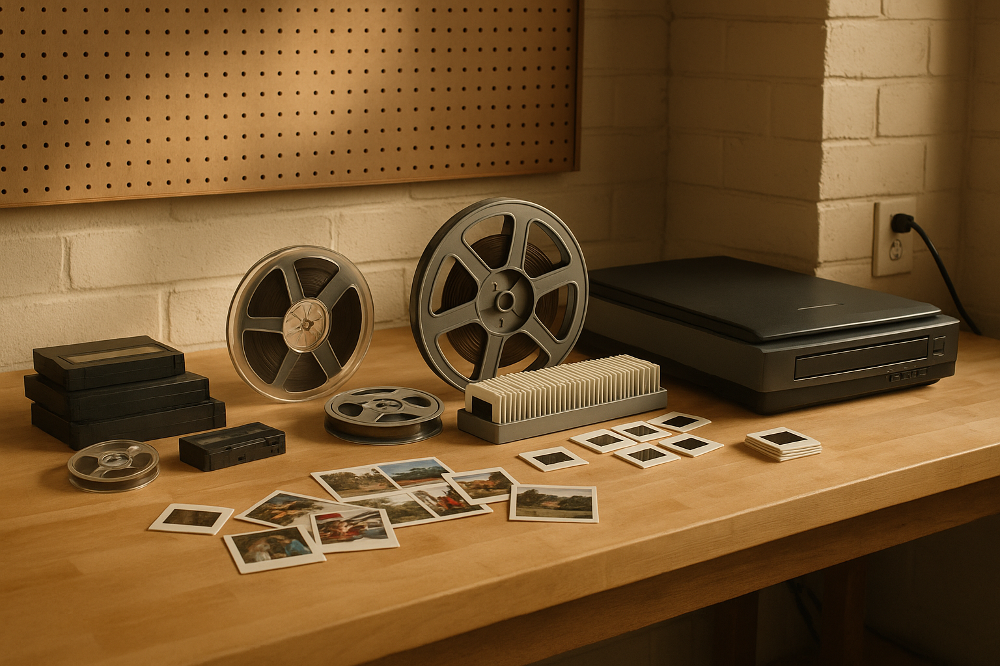

Local drop-off
Customers can bring media to the booth and talk with us in person.
About Us
We bought the equipment for our own transfers first. Then friends asked us to do the same for them, and the business grew from there.
What We Do
We transfer tapes, reels, slides, and printed photographs to DVD and thumb drive. We also make slideshows from scanned images.
Customers can bring media to the booth and talk with us in person.
We work on home movies, reels, slides, photographs, and mixed boxes of older media.
We use our equipment and software to improve the picture and sound when possible.

The Setup
This business grew out of handling our own family media first, then building a better setup to do the job more carefully.
That is why the service stays focused on older family recordings, clear communication, and local drop-off and pickup.
Values
If something goes wrong or extra work is needed, we contact customers before adding charges.
Older media is handled carefully because many items contain the only copy of important family memories.
No mailing means customers can meet us in person, ask questions directly, and pick up orders locally.
As with any transfer service, there is always a small chance of damage with old tapes, and we are upfront about that.
How We Started
We started by transferring our own media. Then we bought better equipment and software. After that, friends started asking us to do the same for them.
Visit Us
Stop by our booth at Uncle John's Flea Market in Cedar Lake, Indiana on Saturday or Sunday with the media you want transferred.
Uncle John's Flea Market, Cedar Lake, Indiana
AvailableSaturday and Sunday drop off and pick up
Bring what you have and we can go over the pricing with you.
Go to the contact section